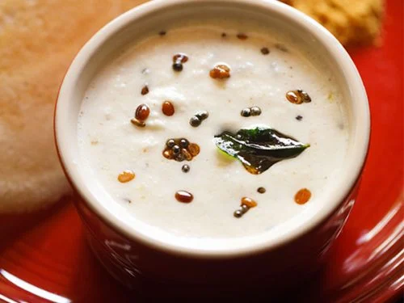

Coconut Chutney

What is Coconut Chutney?
Coconut chutney is a south Indian chutney, a side-dish or a condiment, common in the Indian subcontinent. The
condiment is made with coconut pulp ground with other ingredients such as green chillies, tamarind, salt, coriander
and water. Coconut chutney is made with both red chillies or green chillies. It is served with dosas, idli,
bajji, bonda, and vada.
What are the ingredients required to make it?
- 1/4 gm coconut
- 2 tablespoon chana dal
- 1/2 stick tamarind
- 1/2 tablespoon split black gram
- 2 small green chilli
- 1 pieces ginger
- 1 1/2 pinches salt
for tempering:
- 2 tsp oil
- ½ tsp mustard seeds
- ½ tsp urad dal
- pinch of asafoetida
- few curry leaves
How is it made?
- Grind grated coconut, green chillies, chana dal, ginger, tamarind and salt in a blender
- Make sure that the consistency is thick and not too thin.
- If you feel that the chutney is too thick, you may add a little water to loosen it up.
Tempering
- Heat oil in a small kadai.
- Add mustard seeds, urad dal, asafoetida and curry leaves.
- Allow the tempering to splutter.
- Pour the tempering over coconut chutney.
Serve with idli, vada and dosa.